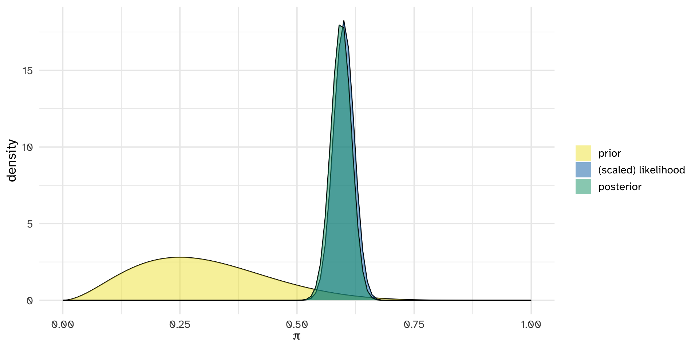

Last week we were trying to understand \(\pi\) the acceptance rate of a graduate program in a specific department. We assumed a somewhat silly prior, and restricted \(\pi\) to be 0.2, 0.4, or 0.8.
This time we will let \(\pi \in [0,1]\).
Continuous probability models
Let \(\pi\) be a continuous random variable with pdf \(f(\pi)\). Then \(f(\pi)\) has the following properties:
\(\int_\pi f(\pi)d\pi = 1\), ie. the area under \(f(\pi)\) is 1
\(f(\pi) \ge 0\)
\(P(a < \pi < b) = \int_a^b f(\pi) d\pi\) when \(a \le b\)
Interpreting \(f(\pi)\):
For each of the student’s prior ideas for \(\pi\) sketch the pdf of the prior. Your plot will not be exact since no exact values are given.
Morteza thinks that it is extremely difficult to get into this program.
Erin does not have any strong opinions whether it is difficult or easy to get into this program.
For each of the student’s prior ideas for \(\pi\) sketch the pdf of the prior. Your plot will not be exact since no exact values are given.
Xuan thinks that it is either really easy or really hard to get into the program
Beyoncé thinks that it is extremely easy to get into this program.
Beta Prior model
Let \(\pi\) be a random variable which can take any value between 0 and 1, ie. \(\pi \in [0,1]\). Then the variability in \(\pi\) might be well modeled by a Beta model with shape parameters\(\alpha > 0\) and \(\beta > 0\):
\[\pi \sim \text{Beta}(\alpha, \beta)\]
The Beta model is specified by continuous pdf \[\begin{equation}
f(\pi) = \frac{\Gamma(\alpha + \beta)}{\Gamma(\alpha)\Gamma(\beta)} \pi^{\alpha-1} (1-\pi)^{\beta-1} \;\; \text{ for } \pi \in [0,1]
\end{equation}\]
where \(\Gamma(z) = \int_0^\infty y^{z-1}e^{-y}dy\) and \(\Gamma(z + 1) = z \Gamma(z)\).
Fun fact: when \(z\) is a positive integer, then \(\Gamma(z)\) simplifies to \(\Gamma(z) = (z-1)!\).
Use the summarize_beta() function in the bayesrules package to find the mean, mode, and variance of various Beta distributions. Example:
summarize_beta(alpha =5, beta =7)
mean mode var sd
1 0.4166667 0.4 0.01869658 0.1367354
Posterior for the Beta-Binomial model
Posterior for the Beta-Binomial model
Conjugate prior
We say that \(f(\pi)\) is a conjugate prior for \(L(\pi|y)\) if the posterior, \(f(\pi|y) \propto f(\pi)L(\pi|y)\), is from the same model family as the prior.
Thus, the Beta distribution is a conjugate prior for the Binomial likelihood model since the posterior also follows a Beta distribution.
Admission Example
Original discrete prior:
\(\pi\)
0.2
0.4
0.8
\(f(\pi)\)
.7
.2
.1
Beta approximation:
plot_beta(3, 7, mean =TRUE, mode =TRUE)
Data + Posterior
3/5 students were admitted
\[ \pi \sim \text{Beta}(3, 7)\]\[ \pi | Y \sim \text{Beta}(3 + y, 7 + n -y)\]\[ \pi | Y \sim \text{Beta}(6, 9)\]
Posterior summary
summarize_beta(6,9)
mean mode var sd
1 0.4 0.3846154 0.015 0.1224745
plot_beta(6, 9, mean =TRUE, mode =TRUE)
Balancing act
plot_beta_binomial(alpha =3, beta =7, y =3, n =5)
More data, more certainty
What if 30/50 applicants get in?
plot_beta_binomial(alpha =3, beta =7, y =30, n =50)
More more data, more more certainty
What if 300/500 applicants get in?
plot_beta_binomial(alpha =3, beta =7, y =300, n =500)

Simulating the Beta-Binomial model
Data Context
Let \(\pi\) represent the proportion of students who are admitted to the program.
\(Y | \pi \sim \text{Binom}(n, \pi)\)
Prior
plot_beta(3, 7)
Data and the Posterior
30/50 students are admitted
summarize_beta_binomial(3, 7, y =30, n =50)
model alpha beta mean mode var sd
1 prior 3 7 0.30 0.2500000 0.019090909 0.13816986
2 posterior 33 27 0.55 0.5517241 0.004057377 0.06369754
plot_beta_binomial(3, 7, y =30, n =50)
Can we simulate the posterior without knowing it exactly?